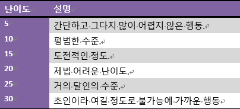
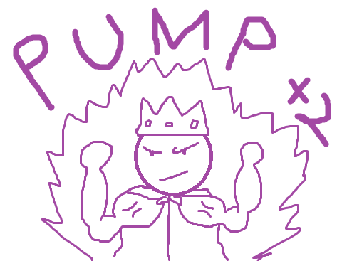

[d20식으로 번형하기 2탄]
기본규칙
d20판에서 판정은 기본적으로 d20을 굴려서 합니다. 물론 수정치가 있으면 수정치도 더합니다. 그렇게 나온 결과를 TN(난이도)과 비교해서 그 이상일 경우 성공, 미만이면 실패입니다. 다만 예외적으로 수정치가 아닌 순수 주사위만 20이 나올 경우 크리티컬로 여겨 TN에 관계 없이 무조건 판정에서 성공하고 부가적인 이득을 얻습니다. 반대로 순수 주사위가 1이 나올 경우 TN에 상관없이 무조건 실패고 부가적인 낭패를 봅니다. 기본적으로 판정은 행동판정과 대결 이렇게 2가지 종류가 있습니다.
행동 판정
기본적으로 누구나 다 평범하게 어려움 없이 할 수 있는 행동은 판정이 필요 없지만 만약에 실패할 가능성이 있는 행동일 경우 판정이 필요 합니다. 판정은 GM이 정한 난이도에 알맞은 클리셰의 점수를 적용한 뒤에 합니다. 해당 클리셰가 없다면 d20만 굴립니다.
하지만 GM이 주의 해야 할 사항은 사용하는 클리셰에 따라서 난이도가 바뀔 수도 있다는점! ‘숙련된 저격수’ 클리셰를 가진 PC에게 멀리 있는 목표를 사격하는 것은 5~10 정도의 난이도겠지만 ‘평범한 경찰’ 클리셰를 가진 PC에게는 10~20 정도의 난이도가 됩니다. 이를 쉽게 하기 위해서 부적절한 클리셰 사용시 난이도를 +5 혹은 +10 정도 향상. 저격수의 장거리 사격의 난이도가 5라면 군인에게는 +5 해서 10, 경찰에게는 +10해서 15. 이렇게 판정의 난이도를 정할 때 사용하는 클리셰가 적절한 클리셰인지 부적절한 클리셰인지 따집니다.
유리와 불리
이야기 중간에 자주 캐릭터가 유리하거나 불리한 상황, 혹은 분위기가 좋거나 그렇지 않은 상황이 있을 것입니다. 이럴 때 난이도나 수정치를 복잡하게 조절하는 대신에 간단히 d20를 2개 굴려서 유리한 상황이면 둘 중 더 높은 값을, 불리한 상황이면 둘 중 더 낮은 값을 사용합니다.
대결
피 터지는 전투 뿐 아니라 외교관 사이의 외교전, 서로 다른 의견의 평론가들끼리의 격한 토론, 댄서들의 댄스배틀, 학생들의 장기자랑 경쟁 등등 둘 이상의 캐릭터들이 서로 경쟁한다면 그것을 대결이라고 합니다. 대결에서는 행동 판정과는 달리 정해진 난이도가 아닌 서로의 판정 결과를 비교해서 겨룹니다. 그렇게 해서 결과가 더 높은 사람이 이기고(비기면 재판정) 낮은 사람은 대결에 사용된 클리셰의 점수가 1점 감소됩니다. 한 번 서로의 결과를 겨루는 시간을 라운드라고 합니다. 대결은 수 차례의 라운드로 이루어지며 마지막에 어느 한 사람의 소유 클리셰 중 아무거나 하나의 점수가 0이 되면 그 사람이 패배하고 끝납니다.
대결의 승자는 패배자가 어떻게 될 지를 결정 합니다. 치열한 전장에서라면 죽였다고 표현할 수도 있고, 악랄한 논쟁 끝이라면 상대를 우스개거리로 만들 수도 있겠지만 중요한 점은 반드시 대결의 성향에 알맞은 결정을 묘사해야만 한다는 것입니다. 테니스 경기에서 이겼는데 갑자기 상대의 목을 댕겅 자르겠다고 묘사하면 말이 안되겠죠. 추가로 해당 결투에 알맞은 클리셰가 더 있다면 대결 중간에 다른 클리셰로 교체해서 사용하는 것도 가능 하지만 클리셰 중 하나가 0이 되면 지는 것은 똑같습니다.
대결이 끝난 다음엔 GM이 소모된 클리셰 점수를 상황에 알맞게 회복시켜 줍니다. 이종격투기 같은 격한 대결 뒤에는 낮은 점수만 회복 되는 것이 맞겠지만 간단한 말다툼 뒤에는 점수를 대부분 혹은 전부 회복 시켜 줘도 문제 없겠지요. 참고할 점은 뚜렷한 거리 개념과 시간 개념이 없습니다. 간단한 말다툼 대결은 10분 정도겠지만 정치적 주제에 대한 논쟁 대결은 3시간이 걸리겠죠. 모든 것은 상황에 맞게 GM이 정합니다.
한방 대결
한방 대결은 대결과 같이 둘 이상의 캐릭터가 서로 경쟁할 때 필요한 판정입니다만 다른 점이 있습니다. 간혹 구태여 대결에 들어가기엔 너무 간단하거나 혹은 시간적 여유가 되지 않을 때 단 한 번의 라운드로 대결의 승패를 결정하면 되는데, 그것이 바로 한방 대결 입니다.
팀 짜기
대결에 참가하는 캐릭터가 너무 많을 때에는 이를 간략화 판정을 쉽게 푸는 방법이 있는데 그것을 팀 짜기라고 합니다. 팀 짜기에서는 ‘아군’과 ‘적군’, 이렇게 두 파로 나누어 대결에서 했던 것 처럼 양측이 서로 판정을 대결해가며 클리셰를 소모시킵니다. 이렇게 하기 위해서 팀은 2가지 종류가 있는데 첫 번째는 '캐릭터 팀'이고 둘 째는 '잡졸무리'입니다.
잡졸무리
잡졸 무리는 클리셰 1점 이하의 단역들을 하나로 묶어서 개인 개체로 취급하는 단위입니다. 잡졸 무리의 클리셰의 점수는 잡졸 한 명의 클리셰 점수와 같거나, 대개는 더 높습니다. 죽음의 굴에서 뛰쳐나온 700마리의 해골 쥐들을 ‘700마리의 해골 쥐(7)’라고 객체화.
캐릭터 팀
캐릭터 팀은 PC던 NPC던 주연과 조연급 캐릭터들을 하나의 객체로 취급합니다. 캐릭터 팀은 PC나 네임드 NPC들을 하나의 개체로 취급하는 단위를 뜻합니다. 캐릭터 팀을 만들려면 먼저 팀의 리더를 정해야 하는데 팀의 리더는 해당 대결에 사용 될 클리셰의 점수가 가장 높은 캐릭터로 하고, 만약 서로 점수가 같을 시에는 합의로 정합니다. 캐릭터 팀의 판정은 리더가 하며, 해당 상황의 적합한 클리셰를 가진 팀원 한 명당 리더는 판정에 +1을 받습니다. 대결의 라운드에서 졌을 때는 리더의 클리셰가 1 감소되며 만일 팀원 중 한 명이 자원해서 피해를 입겠다고 할 시엔 2가 감소됩니다. 다만 팀원이 자원해서 피해를 입을 시 다음 라운드 판정에서 리더의 클리셰 점수가 2배가 됩니다. 이를 복수 보너스라고 부릅니다.
- 팀의 승패: 팀의 대결 중 팀원 한 명이 개별로 클리셰가 0이 되었을 시엔 곧바로 추방 당하는 대신에 팀의 대결 마지막까지 결과를 미룹니다. 후에 대결에서 이긴 팀이 진 팀의 결과를 결정합니다.
- 해체: 팀은 언제든지 해체가 가능하며 그럴 시 그 팀에 해당되는 모든 캐릭터의 클리셰 점수가 1씩 감소 됩니다. 팀을 해체한 캐릭터들은 다시 팀을 만들 수도 있습니다.
- 탈퇴: 팀에 속한 개인은 언제든지 팀에서 빠져나갈 수가 있지만 그 대가로 클리셰가 0이 됩니다. 탈퇴한 캐릭터의 후상황은 대결에서 이긴 팀이 결정합니다.
- 대장 손실: 팀의 리더가 탈퇴하거나 클리셰 점수가 0이 되었을 시엔 해당 팀은 자동으로 해체 됩니다. 곧장 바로 다른 리더를 세워서 팀을 결성할 수가 있고 만약에 전 리더가 복수의 보너스에 의하여 다운되었을 경우 다음 라운드에서 새 팀 리더가 복수의 보너스를 받습니다.
참가 불가자 티켓 주기
대결을 시작 하려는데 아무리 봐도 상황에 알맞는 클리셰도 없고 GM이 부적합 클리셰도 적용해주지 않는다면 그런 캐릭터를 포함한 모두에게 임시 클리셰 1점을(판정에 수정치는 주지 않음) 줘서 대결을 성립시킬 수가 있습니다.
펌프
펌프는 대결 중에 일시적으로 점수를 증폭시켜주는 장치입니다. 라운드가 진행 되기 전에 원하는 만큼 클리셰 점수를 빚지고 빚진 만큼 현재 점수에 추가 시킵니다. 그리고 해당 라운드 후에 승패에 무관하게 빚진 만큼 클리셰에서 점수를 감소시킵니다. 대신에 클리셰의 현재 점수가 1점일 경우엔 빚질 잉여 점수가 없기 때문에 펌프 불가능. 전투에서도 똑같이 펌프된 점수 감소.
아서는 물리적 대결에 어울리는 클리세로는 최고의 기사(4)와 켈트족의 영웅(3) 클리셰를 가지고 있고 현재 오우거(5)와 대면 중입니다. 아서는 비록 이 대결에 사용할 만한 클리셰가 2개나 있지만 둘 다 오우거 보다 점수가 낮기 때문에 잘하면 질 확률이 았습니다. 그래서 아서는 첫 라운드에서 최고의 기사(4) 클리셰를 펌프해서 점수를 2만큼 빚집니다. 그렇게 실베르는 최고의 기사(4+2=6)로 오우거(5)와 상대합니다. 여기서 아서가 이길 경우 오우거의 점수는 5에서 4가 되고 아서는 최고의 기사 클리셰에서 2의 점수를 빚졌기 때문에 최고의 기사(2)가 됩니다. 허나 여기서 아서가 판정에서 질 경우 빚진 점수 2점과 원래 피해 1점을 합해서 최고의 기사(1)이 되고 위험해집니다.
더블펌프
더블 펌프는 펌프에서 한 단계 더 특수한 옵션 룰입니다. 더블 펌프는 기본적으로 펌프와 같이 원하는 만큼의 점수를 라운드 전에 빌린 다음에 라운드 후에 점수를 잃습니다만, 여기서 다른 점은 빌려온 점수의 두 배만큼 판정에 추가시킨다는 점입니다. 위의 예시를 빌리자면, 아서가 최고의기사(3)를 더블펌프 시켜서 2점을 빌려오면 해당 라운드에서 아서는 최고의기사 (4+4=8)로 판정을 하고 라운드 후엔 빌려온 2점만 감소됩니다.
행동 판정에서의 펌프
물론 일반 판정에서도 펌프가 가능합니다. 그럴 경우 판정하기 전에 펌프 여부를 정해야하며 판정 이후 성공과 실패의 여부를 떠나서 캐릭터는 빚진 만큼 점수가 당분간 소모된 상태가 될 것입니다. 무거운 바위를 무리해서 들다가 발이 찧였거나, 안 쓰던 머리를 사용해 열심히 공부를 하고 나니까 심한 두통이 찾아온 것이겠지요.